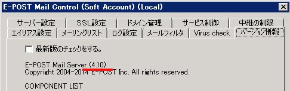
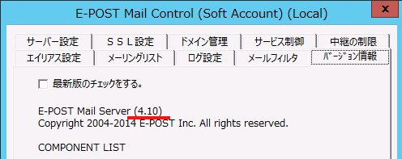
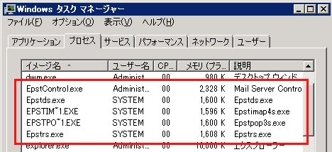

[32bit版][64bit版] E-Post Mail Server / E-Post SMTP Server シリーズが32bit版か64bit版 (x64) かを区別する方法
E-Post Mail Server / E-Post SMTP Server シリーズが32bit版か64bit版（ｘ64）かを区別するには、次の方法で確認してください。
A．E-Post Mail Control の「バージョン情報」タブ画面で確認する方法
E-Post Mail Control の「バージョン情報」タブ画面で確認します。E-Post シリーズ 32bit 版 では、（4.10）のバージョン表示となります。下の画面はE-Post Mail Server シリーズ 32bit 版ですが、E-Post SMTP Server シリーズ では、「E-POST SMTP Server」と表記されます。また、Standard 版かEnterprise II 版の違いは「Virus Check」タブがあるかないかで見分けが可能です。


E-Post シリーズ 32bit 版
E-Post シリーズ 64bit 版 では、（4.20-x64）以降のバージョン表示となります。たとえば（4.59-x64）のバージョン表示も64bit版です。下の画面はE-Post Mail Server (x64) シリーズ 64bit 版ですが、E-Post SMTP Server シリーズ では、「E-POST SMTP Server」と表記されます。また、Standard 版かEnterprise II 版の違いは「Virus Check」タブがあるかないかで見分けが可能です。
Windows Server 2012 R2 での表示
E-Post シリーズ 64bit 版 では、基本的に注記がつきません。64bitOS の2008 R2 環境下で動作させると稼働中サービスはショートファイルネームを使った表記で特に注記は付きません。

Windows Server 2008 R2 での表示
E-Post シリーズ 64bit 版 を64bitOS の2012 R2 環境下でE-Post Mail Server Enterprise II(x64) を動作させている例では下の通り。基本的に(32 ビット)などの注記がつきません。
ちなみにStandard 版では赤い実線枠部分のみ。点線枠のEnterprise II 版モジュール”epstavs.exe”だけが例外的に(32 ビット)表記がされます。